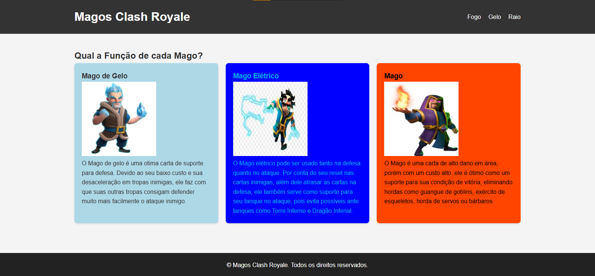

BEM VINDOS
Sejam todos bem vindos ao meu Portifólio,
aqui irei guardar todos os meus trabalhos
de desenvolvimentos de Site utilizando HTML
e CSS.
Com esse Portfólio podemos acompanhar minha tragetória
na criação de diferentes sites, podendo notar a evolução, (ou não),
conforme o tempo passa.
Além disso posso guardar de recordação, para que no futuro eu
possa olhar e sentir saudades de quando ainda criava sites na escola.
Meus Trabalhos
Trabalho de Personalização de Site
Nesse Trabalho, nós deveriamos utilizar a base do Site que criamos em aula, e personalizá-lo conforme nosso desejo. O tema que eu escolhi foi os Magos do Clash Royale.
Trabalho de Criação de Site Respondivo

O objetivo desse Trabalho era testar nossas capacidades de criar um Site do zero, aplicando nele os conceitos aprendidos sobre responsividade. Nele optei por um tema bem básico: como fazer uma limonada!